1008C14 engine link bracket - r r
- Path
- Procedures > 10 ENGINE > 1008 POWER UNIT SUPPORTS > 1008C power unit reaction elements > 1008C14 engine link bracket - r r
- Kind
- repair procedure (removal / refitting; the operation number is the code)
- Applies to
- engines: 2.5 V6, 3.2 V6, 1.9 JTD 8v , 1.9 JTD 16v, 2.4 JTD 10v, 2.4 JTD 20v; all production periods
- Interactive page
- https://sloeber94.github.io/elrnDB-a156/en/#/3237454
Applies to: engines: 2.5 V6, 3.2 V6; all production periods
 Removing
Removing
 Refitting
Refitting1008B10 power unit front mount (timing side) flexible block - replace
4450B10 Front WHEEL (one) - R.R.
7055B64 Engine compartment DUST shield in front wheel arch (one), left or right - R.R.
1092G10 single engine belt r r
1092A10 Crankshaft services PULLEY - R.R.
1032D12 timing system protective cover(s) - r + r
1032C32 fixed timing system tensioner (one) r + r
1032B59 rh head toothed drive pulley - r r for versions with air conditioner
1. Undo the bolts (1a) and remove the right rear protection (1b) from the right cylinder head.
2. Undo the bolt fixing the left rear protection to the bracket.
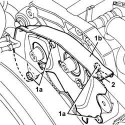
Applies to: engines: 2.5 V6, 3.2 V6; all production periods
1. Undo the nuts (1a) and remove the bracket on the engine for the reaction rod (1b).
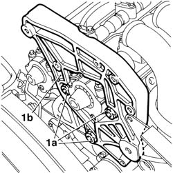
Applies to: engines: 2.5 V6, 3.2 V6; all production periods
Refitting
RemovingFit the bracket on the engine for the reaction rod and fix it tightening the nuts to the recommended torque.
 | Fastening | Component | Ø | Value (daNm) |
|---|---|---|---|---|
- | Nut | REACTION LINK BRACKET ON ENGINE | M10 | 4.2 - 5.2 |
Tighten the bolt fixing the left rear protection.
Fit the right rear protection and fix it using the bolts
1032B59 rh head toothed drive pulley - r r for versions with air conditioner
1032C32 fixed timing system tensioner (one) r + r
Carry out op. 1016A42 left hand cylinder head ignition coil cover - r+r
Carry out op. 1072B50 sleeves connecting air capacity box to inlet manifold is - r+r
Carry out op. 5510C14 ignition coil/s - r+r
Carry out op. 1016A36 left hand and right hand cam cover - r+r
1016A36 left hand and right hand cam cover - r+r
1072B50 sleeves connecting air capacity box to inlet manifold is - r+r
1016A42 left hand cylinder head ignition coil cover - r+r
1032D12 timing system protective cover(s) - r + r
1092A10 Crankshaft services PULLEY - R.R.
1092G10 single engine belt r r
7055B64 Engine compartment DUST shield in front wheel arch (one), left or right - R.R.
Applies to: engines: 1.9 JTD 8v , 2.4 JTD 10v; all production periods
Removing
Refitting1008C10 power unit upper reaction link r r .
1016A10 sound-proofing cover - r + r .
1. Release the electrical wiring for the cam angle sensor from the right side cam cover.
2. Undo bolts (2a) and remove the right side cam cover (2b).
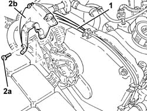
Applies to: engines: 1.9 JTD 8v , 2.4 JTD 10v; all production periods
1. Undo the bolt securing the bracket to the engine for the reaction rod to the cylinder head.
2. Undo the bolts securing the bracket to the engine for the reaction rod to the power steering pump mount.
3. Remove the bracket on the engine for the reaction rod (3a) complete with spacer (3b).
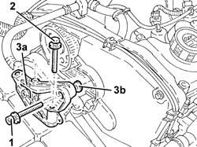
Applies to: engines: 1.9 JTD 8v , 2.4 JTD 10v; all production periods
Refitting
Removing1. Refit the bracket on the engine for the reaction rod complete with spacer.
2. Tighten the bolts to the specificed torque that secure the bracket to the engine for the reaction rod to the power steering pump mount.
| Fastening | Component | Ø | Value (daNm) |
|---|---|---|---|---|
2 | Bolt | REACTION LINK ATTACHMENT BRACKET | M10 | (Power assisted steering pump mounting side) 4.5 - 5.5 |
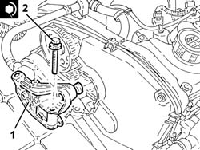
Applies to: engines: 1.9 JTD 8v , 2.4 JTD 10v; all production periods
1. Adjust the spacer notches using a screwdriver until it is in contact with the cylinder head.
2. Tighten the bracket retaining bolt to the engine for the reaction rod to the cylinder head to the specified torque.
| Fastening | Component | Ø | Value (daNm) |
|---|---|---|---|---|
2 | Bolt | REACTION LINK ATTACHMENT BRACKET | M10 | (Cylinder head side) 4.5 - 5.5 |
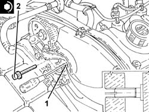
Applies to: engines: 1.9 JTD 8v , 2.4 JTD 10v; all production periods
Fit the right side cam cover and fix it using the bolts.
Secure the cam angle sensor electrical wiring from the right side cam cover.
Applies to: engines: 1.9 JTD 16v; all production periods
Removing
RefittingProceed with removal 1016A10 sound-proofing cover - r + r .
Proceed with removal 1008C10 power unit upper reaction link r r .
1. Undo the bolts (1a) and (1b), then remove the bracket on the engine for the reaction rod (1c).
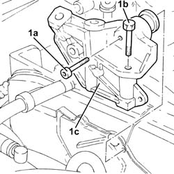
Applies to: engines: 1.9 JTD 16v; all production periods
Refitting
Removing1. Fit the bracket on the engine for the reaction rod (1a) and fix it tightening the bolts (1b) and (1c) to the recommended torque.
| Fastening | Component | Ø | Value (daNm) |
|---|---|---|---|---|
1b | Bolt | REACTION LINK BRACKET ON ENGINE | M10 | (Cylinder head side), 4.5 ÷ 5.5 |
| Fastening | Component | Ø | Value (daNm) |
|---|---|---|---|---|
1c | Bolt | REACTION LINK BRACKET ON ENGINE | M10 | (Power assisted steering pump mounting side), 4.5 ÷ 5.5 |
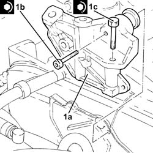
Applies to: engines: 1.9 JTD 16v; all production periods
Proceed with refitting 1008C10 power unit upper reaction link r r .
Proceed with refitting 1016A10 sound-proofing cover - r + r .
Applies to: engines: 2.4 JTD 20v; all production periods
Removing
RefittingProceed with removal 1008C10 power unit upper reaction link r r .
Position a hydraulic jack under the gearbox.
1. Undo the bolt fixing the power unit gearbox side rigid support to the flexible mounting.
Lower the hydraulic jack until the drive shaft joint is resting on the front suspension crossmember.
Remove the hydraulic jack from under the gearbox.
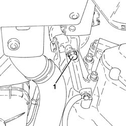
Applies to: engines: 2.4 JTD 20v; all production periods
Proceed with removal 1016A10 sound-proofing cover - r + r .
1. Undo the bolts (1a) and remove the upper protective timing cover (1b), inlet side.
2. Undo the bolts (2a) and remove the upper protective timing cover (2b), exhaust side.
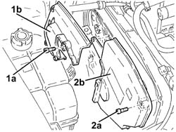
Applies to: engines: 2.4 JTD 20v; all production periods
1. Undo the bolts (1a) and (1b), then remove the bracket on the engine for the reaction rod (1c).
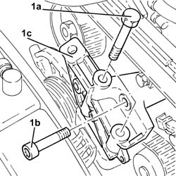
Applies to: engines: 2.4 JTD 20v; all production periods
Refitting
Removing1. Fit the bracket on the engine for the reaction rod (1a) and fix it tightening the bolts (1b) and (1c) to the recommended torque.
| Fastening | Component | Ø | Value (daNm) |
|---|---|---|---|---|
1b | Bolt | REACTION LINK BRACKET ON ENGINE | M10 | (Cylinder head side), 4.5 ÷ 5.5 |
| Fastening | Component | Ø | Value (daNm) |
|---|---|---|---|---|
1c | Bolt | REACTION LINK BRACKET ON ENGINE | M10 | (Power assisted steering pump mounting side), 4.5 ÷ 5.5 |
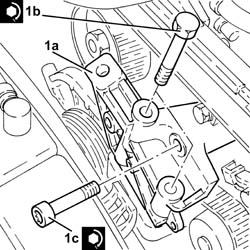
Applies to: engines: 2.4 JTD 20v; all production periods
Fit the upper protective timing gear cover, exhaust side, and fix it using the bolts.
Fit the upper protective timing gear cover, inlet side, and fix it using the bolts.
Proceed with refitting 1016A10 sound-proofing cover - r + r .
Position a hydraulic jack under the gearbox.
Using the hydraulic jack, place the gearbox side rigid power unit support in contact with the flexible mounting.
1. Undo the bolt fixing the gearbox side rigid power unit support to the flexbile block to the specified torque.
| Fastening | Component | Ø | Value (daNm) |
|---|---|---|---|---|
1 | - | - | - | - |
Remove the hydraulic jack from under the gearbox.
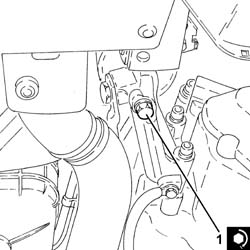
Applies to: engines: 2.4 JTD 20v; all production periods
Proceed with refitting 1008C10 power unit upper reaction link r r .
Topics linked from this page (15)
- 1008B10 power unit front mount (timing side) flexible block - replace
- 1008C10 power unit upper reaction link r r
- 1016A10 sound-proofing cover - r + r
- 1016A36 left hand and right hand cam cover - r+r
- 1016A42 left hand cylinder head ignition coil cover - r+r
- 1032B14 toothed timing belt - r + r for timing adjustment or replacement versions with air conditioner
- 1032B59 rh head toothed drive pulley - r r for versions with air conditioner
- 1032C32 fixed timing system tensioner (one) r + r
- 1032D12 timing system protective cover(s) - r + r
- 1072B50 sleeves connecting air capacity box to inlet manifold is - r+r
- 1092A10 Crankshaft services PULLEY - R.R.
- 1092G10 single engine belt r r
- 4450B10 Front WHEEL (one) - R.R.
- 5510C14 ignition coil/s - r+r
- 7055B64 Engine compartment DUST shield in front wheel arch (one), left or right - R.R.
Topics that link to this page (22)
- 1016C10 cylinder head - r + r and replace gasket
- 1020D14 front crank shaft oil seal cover - r + r and replace seals for versions with oil pump on crank shaft, timing side
- 1020D16 front crankshaft oil seal cover - r+r and replace gaskets for versions with airconditioner
- 1020D18 front crank shaft cover oil seal - replace
- 1028H20 piston with connecting rod - r r
- 1028H21 piston with connecting rod - r r
- 1032B14 toothed timing belt - r + r for timing adjustment or replacement versions with air conditioner
- 1032B47 toothed drive pulley - r r for versions with air conditioner
- 1032B62 a/c duct pulley - r r
- 1032C19 mobile timing belt tensioner - r r for versions with air conditioner
- 1032C31 fixed timing tensioner - r r
- 1036B10 overhead camshaft - r r on vehicle
- 1036E15 camshafts in rh cylinder head - r r on vehicle for versions with air conditioner
- 1036E19 camshafts in lh and rh cylinder head - r r on vehicle for versions with air conditioner
- 1036E58 front oil seal of r/h overhead camshafts - replace
- 1060E10 pressure pump - r r
- 1060E30 pressure pump pulley - r r
- 1060E40 supplementary pressure pump - r r
- 1060G22 cam angle sensor - r r
- 1072B50 sleeves connecting air capacity box to inlet manifold is - r+r
- 1088C12 water pump - r+r for versions with air conditioner
- 4130B32 power steering pump mount - r r